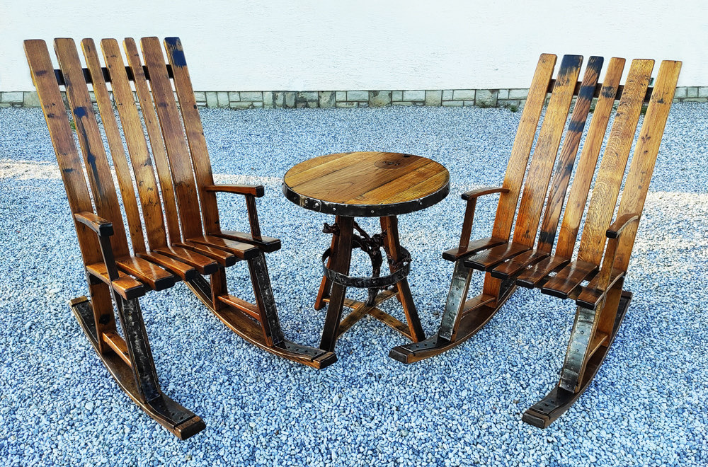
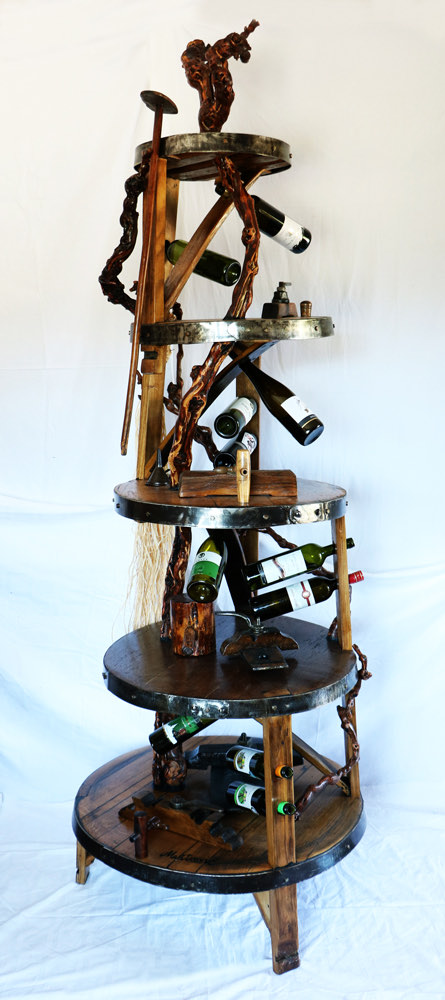
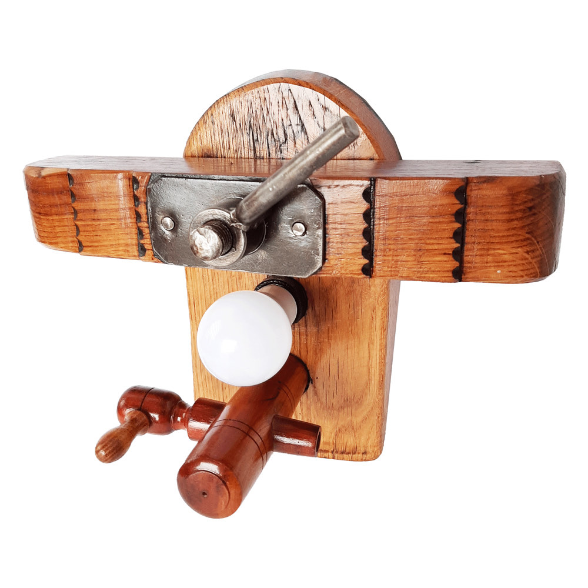
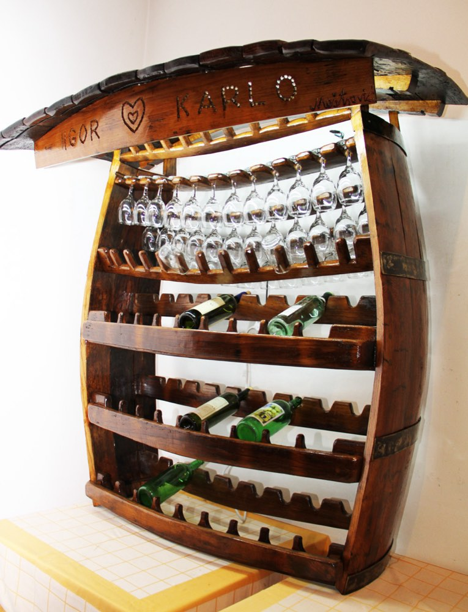
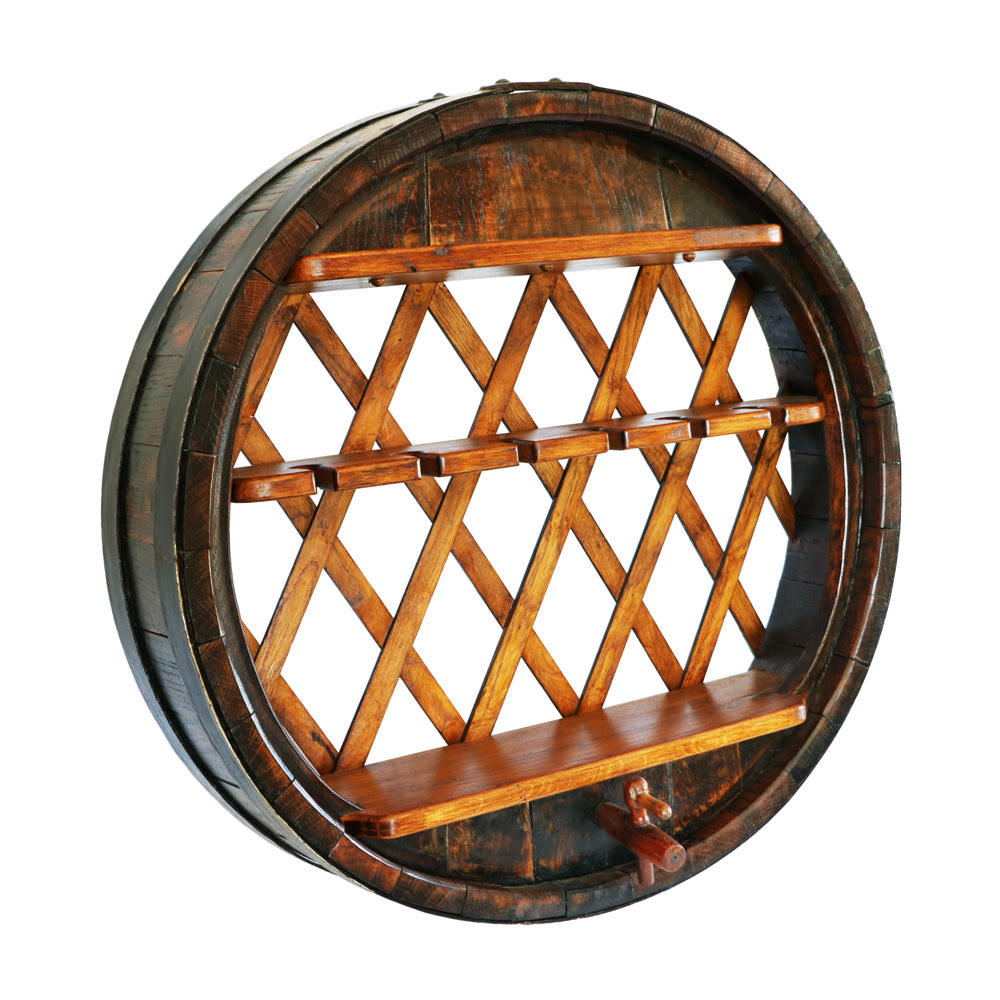
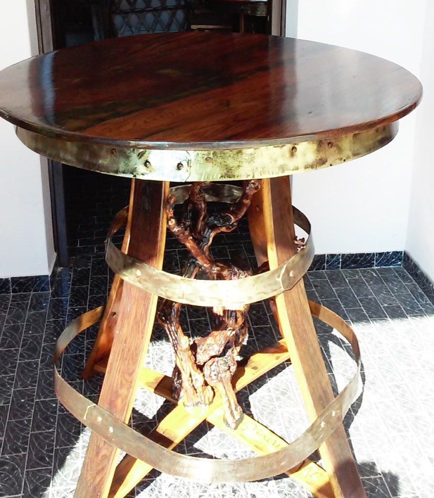
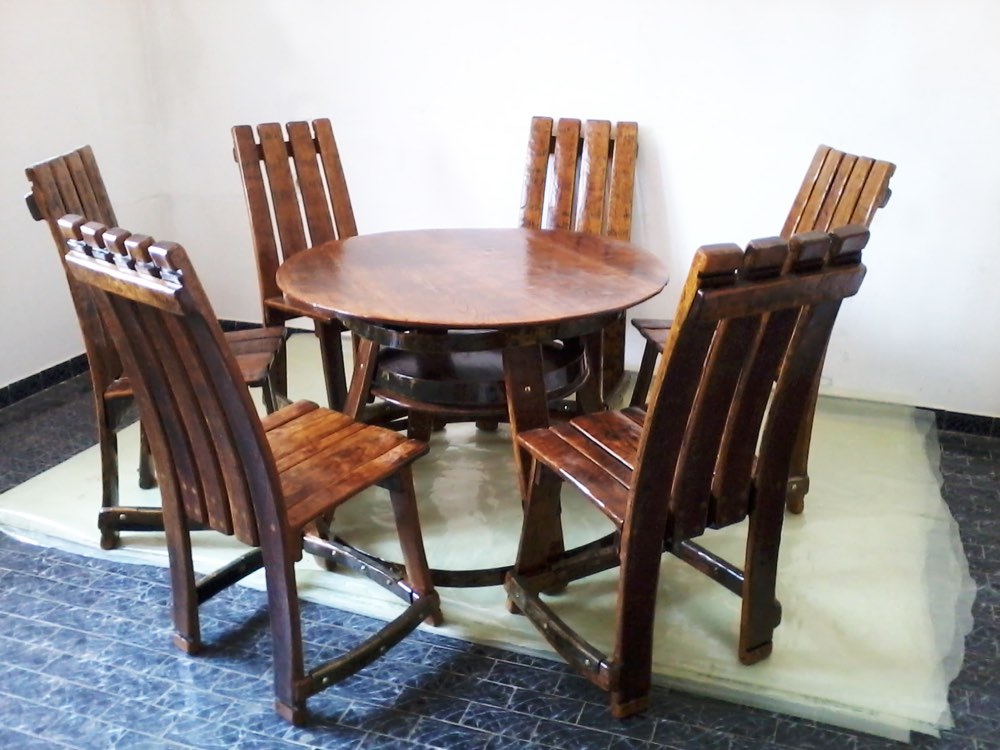
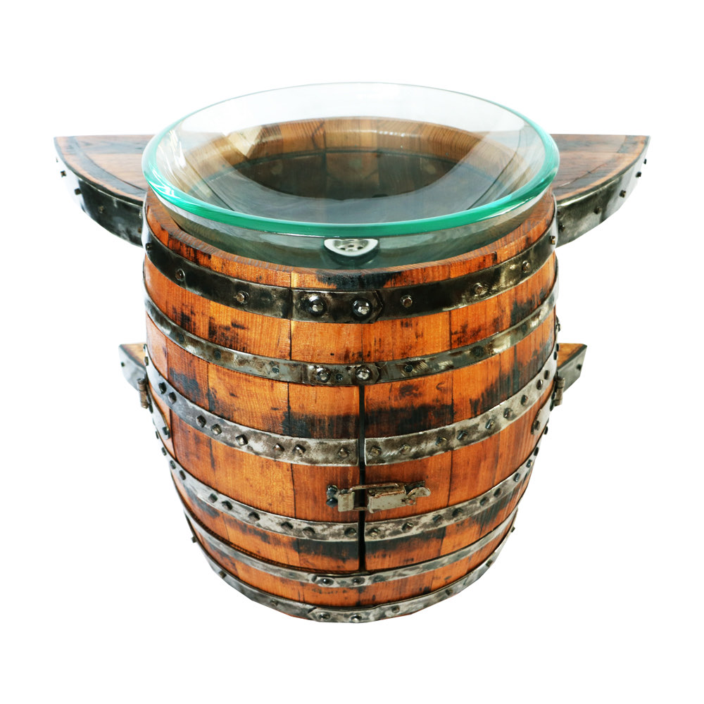
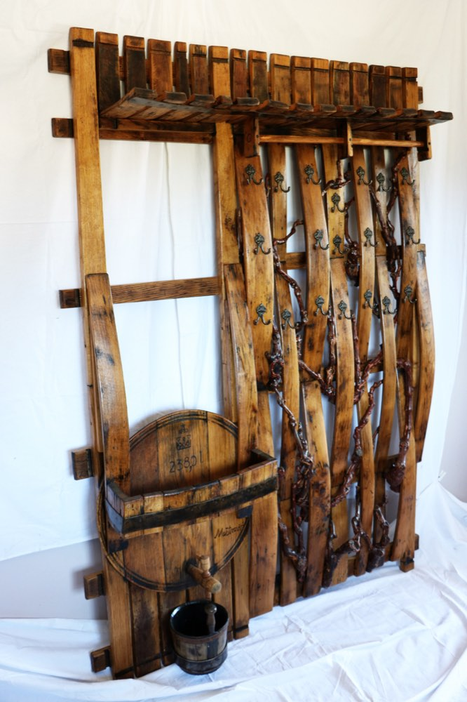

Stolovi od bačve
Cijela bačva postaje stol s masivnom okruglom pločom. Neki imaju i vratašca s policom u trupu bačve.
Umjetnički obrt Mladena Meštrovića izrađuje namještaj od vinskih bačvi i starih predmeta: stolove, klupe, barske stolce, police za vino i svjetiljke. Uređujemo i kompletne interijere i eksterijere vinarija, konoba, klijeti, restorana i kuća.

Dužice, dna i obruči stare bačve ostaju vidljivi, a od njih nastaju komadi za vrt, konobu i dom.
Cijela bačva postaje stol s masivnom okruglom pločom. Neki imaju i vratašca s policom u trupu bačve.

Visoki stolovi s okruglom pločom i stolci od zakrivljenih dužica – za konobu, klijet ili terasu.

Klupe, stolice i stolovi koji zajedno čine garnituru za dvorište ili vrt.

Zakrivljene dužice bačve prirodno daju oblik naslonu i ljuljačkama stolice.

Zidne police za boce i čaše, okrugle police iz dna bačve i visoki stalci za vino.

Svjetiljke sa starom drvenom pipom, vješalice s lozom, pladnjevi od dužice i božićne jaslice.
Osim pojedinačnih komada, obrt uređuje kompletne interijere i eksterijere. Namještaj od bačvi najprirodnije pristaje ondje gdje se vino čuva, toči i pije.








Nazovite 091 790 7084 ili pošaljite e-mail. Opišite što trebate i, ako možete, priložite fotografiju prostora.
Zajedno odredite komad ili cijeli prostor: oblik, mjere i namjenu.
Namještaj nastaje u radionici u Mariji Bistrici, od bačvi i starih predmeta.
Gotov komad preuzimate u radionici ili dogovarate dolazak i postavljanje na vašoj lokaciji.
„Obrt smo koji se bavi izradom raznog namještaja od vinskih bačvi i starih predmeta.”
Iz opisa na Facebook stranici obrtaOd vinskih bačvi i starih predmeta. Dužice, dna i obruči bačve postaju stolovi, klupe, stolci, police za vino, svjetiljke i drugi komadi.
Da. Obrt uređuje kompletne interijere i eksterijere vinarija, vinoteka, vinskih podruma, konoba, klijeti, restorana i kuća.
Na adresi Zagrebačka ulica 76, 49246 Marija Bistrica, u Krapinsko-zagorskoj županiji.
Prema Google profilu obrta: od ponedjeljka do subote od 7 do 20 sati, nedjeljom od 7 do 12 sati. Broj je 091 790 7084.
Nazovite 091 790 7084 ili pišite na mladen.mestrovic1@gmail.com. Obrazac na ovoj stranici složit će e-mail s vašim podacima, a fotografiju prostora možete priložiti u svom programu za e-poštu.

| Ponedjeljak | 7 – 20 h |
| Utorak | 7 – 20 h |
| Srijeda | 7 – 20 h |
| Četvrtak | 7 – 20 h |
| Petak | 7 – 20 h |
| Subota | 7 – 20 h |
| Nedjelja | 7 – 12 h |